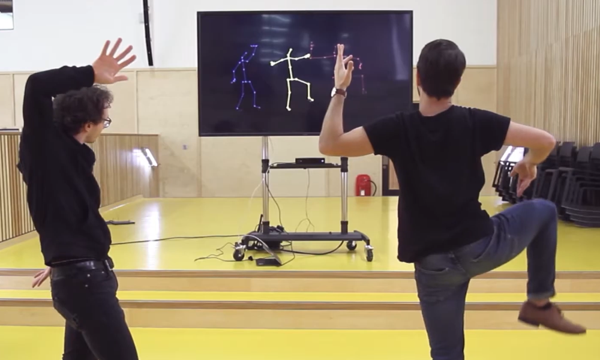
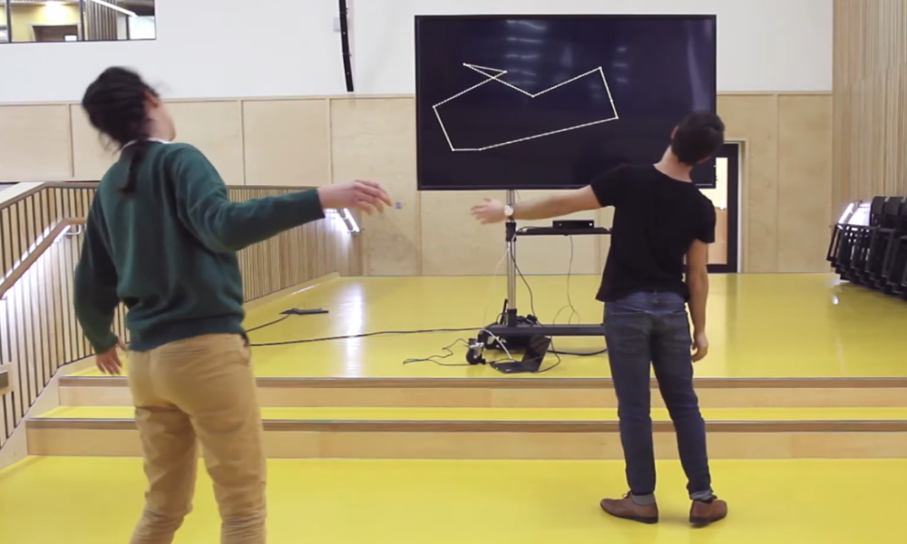
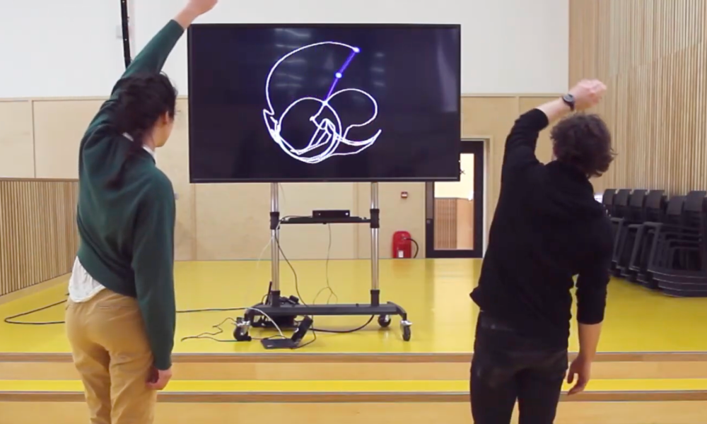
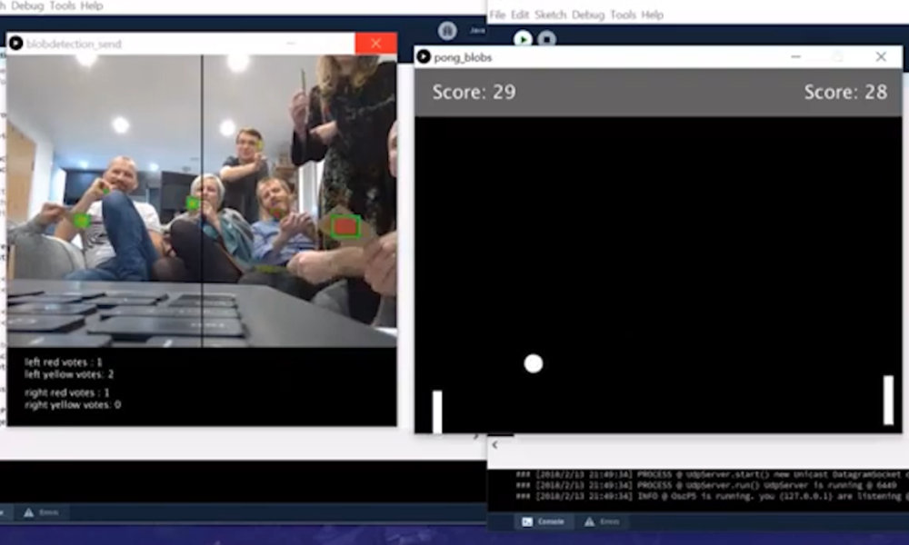
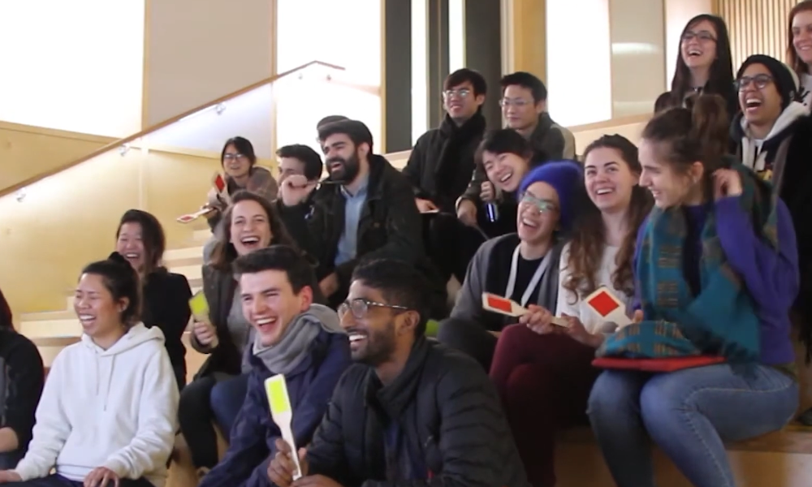
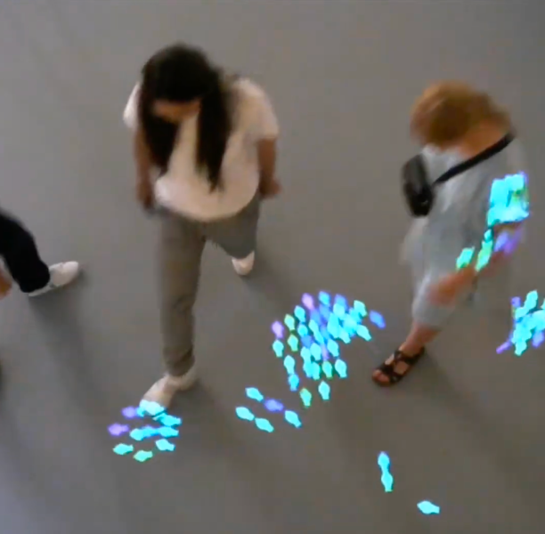

During my Masters', I became interested in the ways that multiple people can interact with a computer interface at once. I prototyped a series of experiments to offer various modes for interaction, and to see how people felt while using them.
I used unusual interfaces like handheld objects and body tracking, and combined the inputs in varied ways, to explore how a group of people can engage with a cybernetic system together.
I used unusual interfaces like handheld objects and body tracking, and combined the inputs in varied ways, to explore how a group of people can engage with a cybernetic system together.
Weird bodies
I used a Kinect camera to track two people at once, combining points from their bodies in various ways.In some experiments I created a third figure in the centre of the frame, which was the average of the two people. In others, I connected random points from each person into one amorphous blob, or joined their arms into a double pendulum.

Shared skeleton

Shared geometric body

Amorphous body

Double pendulum
Large group control
Inspired by an experiment at SigGraph in 1991, I gave an audience paddles with red on one side and yellow on the other and let them play adaptations of games like Pong, Flappy Bird and Chrome's T-Rex game, which I prototyped from scratch in Processing.A camera facing at the audience picks up how many players are holding up the red side of their paddle and how many the yellow, to control up and down movement or trigger a jump within the game.
I did some initial guerilla testing of a very basic prototype with a small group of friends at a party, and then arranged for a larger group to take part during an evening of talks at Here East in Hackney.

Group playing games

Initial guerilla testing

Chrome T-Rex clone

Group playing games
Remote connections
I used websockets and Nodejs to connect events on two canvas elements on different machines. I coded the interactive visuals in p5js and when one user draws bubbles on their screen, they show up on the other screen almost instantaneously.I prototyped this with two local laptops initially and later used this technology to create Flock (which you can read more about in this case study)

Prototype of remote connection across two laptops
Everybody jump
In this interaction, I hooked up the original Chrome T-Rex game to Kinect tracking and set it up so that the T-Rex only jumps if over half the participants are in the air at the same time.This was fun but quite difficult, I think our best run was about 4-5 jumps in a row.

Collaborative T-Rex
Floor projections
I mounted a Kinect camera high up looking down, and used the depth camera to track people's movements within a small area. A projector pointing down at the same space displayed visuals I coded in Processing, which responded to people's positions.
Floor projection connections

Floor projection ecosystem

"People" for testing